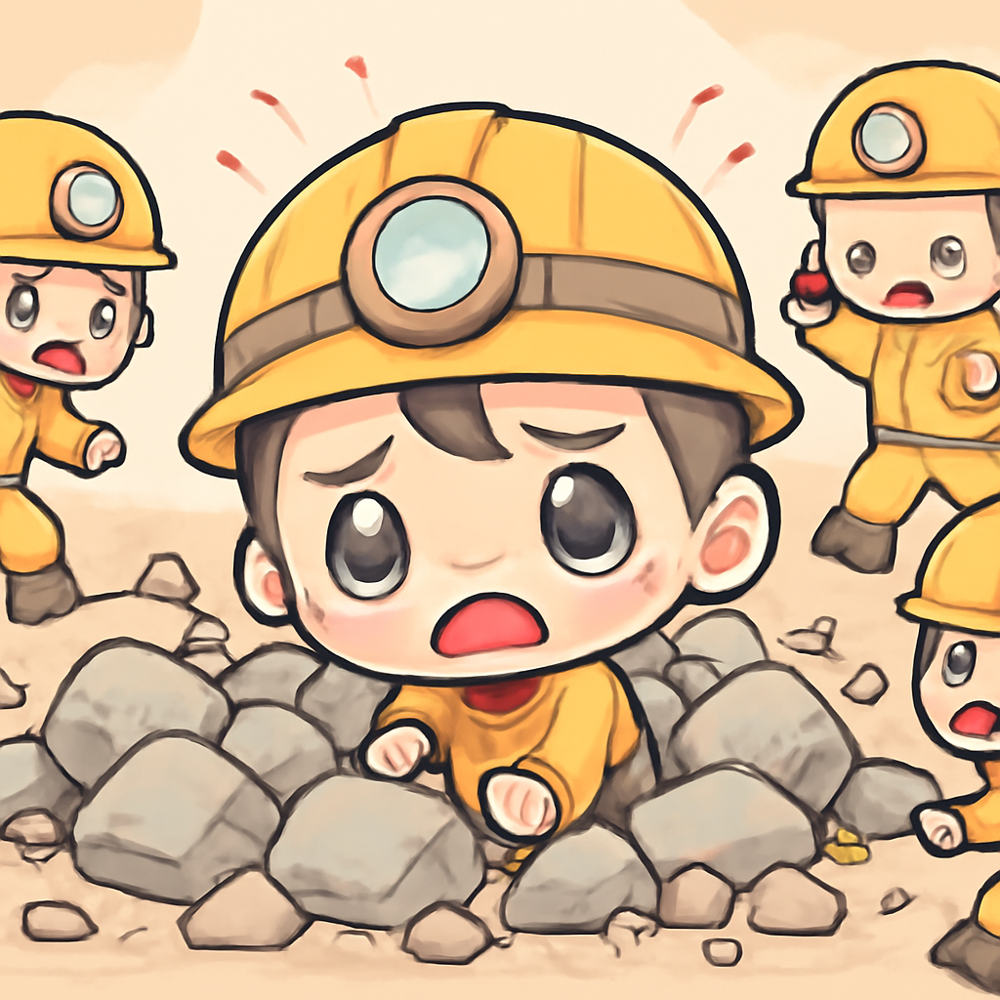

其一 · 西班牙塞烏塔 · 大量移民潮引發危機
塞烏塔面臨移民湧入，混亂不堪。
在西班牙的塞烏塔，從摩洛哥湧入多達60,000名移民，造成當地混亂不堪。雖然大部分移民在幾天內返回摩洛哥，但這次事件讓西班牙的移民政策面臨重大挑戰，像是開了一個不太好笑的政治笑話。
🔗 原始新聞 ↗
2026-08-01 · 以古觀今，以笑抗愁
塞烏塔面臨移民湧入，混亂不堪。
在西班牙的塞烏塔，從摩洛哥湧入多達60,000名移民，造成當地混亂不堪。雖然大部分移民在幾天內返回摩洛哥，但這次事件讓西班牙的移民政策面臨重大挑戰，像是開了一個不太好笑的政治笑話。
🔗 原始新聞 ↗
克里維里赫村發生火箭襲擊，造成多名死傷。
在烏克蘭的克里維里赫，俄羅斯的火箭攻擊造成至少六人喪生，包括一名六歲女孩和兩名青少年。這起事件再次凸顯了戰爭的殘酷與平民的脆弱，令人心痛。希望未來能有和平的曙光。
🔗 原始新聞 ↗
巴基斯坦冰川意外造成多名登山者遇難。
近日在巴基斯坦發生了一起令人心痛的雪崩事件，三名登山者的遺體被尋獲，而仍有多人失蹤。這不僅是登山運動的風險，也是對搜索救援能力的考驗。希望大家在追求冒險的同時，也要注意安全！
🔗 原始新聞 ↗
伊朗在考慮如何控制與美國的衝突。
在伊朗，對於與美國的衝突，分析人士認為有限戰爭可能比和平更符合他們的戰略利益。這種微妙的平衡讓人不禁想起棋盤上的博弈，雖然棋子不斷移動，但誰能贏得整場戰爭仍然難以預測。
🔗 原始新聞 ↗
巴基斯坦煤礦爆炸事故，造成多人死傷。

巴基斯坦的一座煤礦發生爆炸，造成至少34人遇難，救援人員正在努力尋找失蹤者。這類事件反映出礦業的危險性以及當地的安全措施不足，希望能改進，以避免未來的悲劇。
🔗 原始新聞 ↗